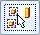

Find and replace latest revisions
If you are a Solid Edge data management user and have defined a Solid Edge vault, you can find out if any part in an assembly has a newer revision. To do so, you use the Get Latest command on the Data Management tab. You can replace a single part or all parts in an assembly that have a newer revision available with their latest revision, or with their latest released revision.
For information about setting up Solid Edge data management, see Getting started with Solid Edge data management.
Find the latest revisions
-
Open the assembly of interest.
-
Choose Data Management tab→Get Latest .
Solid Edge searches the vault for the revision history of every part in the assembly and displays in PathFinder the Revisions icon
 to the left of every part that has a newer revision available.
to the left of every part that has a newer revision available.If the system finds two revisions for the same part, that is duplicate files, it displays the revision with the newest creation date in red.
-
(Optional) To see additional information about the newer revisions, hover over any part that has a newer revision to display its tooltip.
Note:This information remains available throughout the Solid Edge session, even after exiting the Get Latest command.
Replace parts with their latest revisions
-
Select the parts you want to replace with their latest revision or simply click the Select All button

on the Replace Part command bar. -
Click the Accept button
 .
.Solid Edge updates the selected parts to their latest revisions and removes the Revisions icon
previously displayed to the left of the parts. -
(Optional) To verify that all parts in the assembly were updated to their latest revision, choose Data Management tab→Get Latest .
Solid Edge informs you that there are no newer revisions available for any parts in the assembly.
Replace single parts with their latest released revision
-
On the Replace Part command bar, click the Released Only button .
Solid Edge highlights the parts that have a newer released revision.
-
Select the parts you want to replace with their newer revisions or simply click the Select All button on the Replace Part command bar.
-
Click the Accept button
.Solid Edge updates the selected parts to their newest released revisions and removes the Revisions icon
previously displayed to the left of the parts.